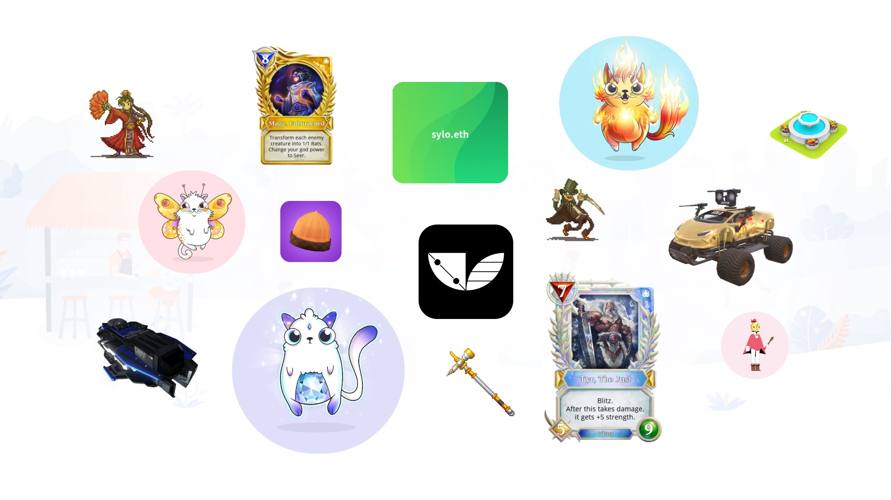
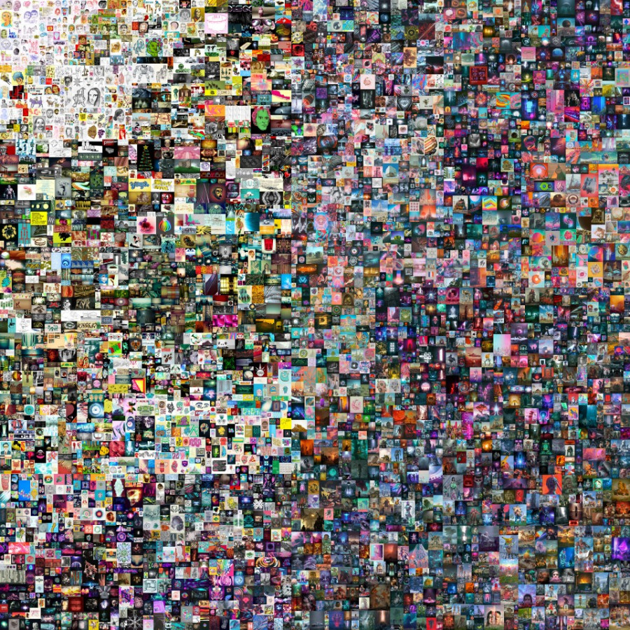

NFT-токены. Что это и с чем есть?
- nft криптовалюта

На волне хайпа криптовалют в природе появились так называемые NFT-токены. Невзаимозаменяемый токен или уникальный токен (в простонародье NFT) является видом криптографических токенов, которые уникальны в своей природе, ограничены в количестве и имеют свой адрес в цепочке блоков.
Если рассуждать простыми словами, то NFT-токен – это что-то уникальное, как трек Моргенштерна произведение Баха или картина Пабло Пикассо. Соответственно, такие токены будут существовать всего в одном экземпляре, а их владелец может раздавать права на использование по своему усмотрению. Но что делать допустим с предметами которые существуют в мире и похожи друг на друга, будь то: лопаты, яблоки, здания или даже кошки. Понятное дело, что каждая кошка в природе уникальна, а для своего хозяина еще и значима. Но в целом это просто группа живых существ / предметов, к которым тоже можно привязать NFT-токен, указать в нем информацию о кошке Люсе, когда родилась, данные родословной, цвет глаз и шерсти. Тот кто будет владеть этим токеном, будет являться непосредственным владельцем кошки, и тогда ему не нужно будет носить с собой документы, а можно просто будет предъявить NFT-токен, чтобы забрать ее от ветеринара или продемонстрировать на выставке.
Это все конечно в далеком будущем, но что есть сейчас?
В данный момент NFT-токены только на пути становления себя в криптовалютном сообществе. Конечно уже произошло несколько значимых событий:
-
Майк Винкельман продал JPG-файл состоящий из 5000 картин за $69,3 млн

-
и множество событий по-меньше.
Таким образом NFT-токен дает возможность на огромное количество реализаций и оцифровки реального мира: патенты, лицензии, права на владение и прочее.
PS.: Справедливости ради стоит сказать, что появились сведения о том, что хакер Monsieur Personne создал копии токена картины Майка Винекльмана. Копии не являются подтверждением собственности на картину, но цель была немного иной.